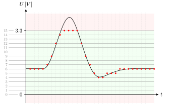
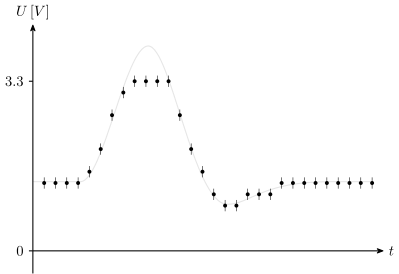

Basisscript voor het experiment¶
Het experiment wat we gaan uitvoeren is het bepalen van de $I,U$-karakteristiek van een LED. Omdat de Arduino alleen getallen tussen 0 en 1023 kan sturen en ontvangen moeten we nadenken over de Analoog-digitaalconversie voordat we een zinnige $I,U$-karakteristiek kunnen maken.
Analoog-digitaalconversie (ADC)¶
We hebben tot nu toe gewerkt met getallen van 0-1023 sturen en ontvangen. Wat is precies de betekenis van deze getallen? Daarvoor moeten we dieper ingaan op hoe de Arduino — en computers in het algemeen — getallen omzet in een spanning en hoe spanningen door de Arduino worden gemeten.
Een analoog signaal is continu in zowel de tijd als de waardes die het signaal aan kan nemen. Een digitaal signaal is echter discreet: op vaste tijdstippen is er een waarde bekend en het signaal kan maar een beperkt aantal verschillende waardes aannemen.1
Bemonsteren of sampling is het proces waarbij een analoog signaal wordt uitgelezen
en wordt omgezet in een digitaal signaal. Zo wordt een audiosignaal al sinds eind jaren '70 van de vorige eeuw gewoonlijk bemonsterd met een frequentie van 44.1 kHz en een resolutie van 16 bits. Dus 44100 keer per seconde wordt er gekeken wat de waarde van het geluidssignaal is en dat wordt opgeslagen als een getal van 16 bits en kan dus $2^{16} = 65536$ verschillende waardes aannemen. Dit is nauwkeuriger dan het menselijk gehoor kan onderscheiden.
ADC resolutie
De schuifjes hierboven zijn aan elkaar gekoppeld. Het bovenste schuifje laat de analoge waarde zien. Het onderste schuifje is de bijbehorende digitale waarde.
- Zet het digitale signaal op een resolutie van 4-bit (16 stapjes). Stel je meet een waarde van 6, wat zijn dan de mogelijke voltages die daarbij horen? Wat is dan de nauwkeurigheid?
- Zet het digitale signaal op een resolutie van 6-bit (64 stapjes). Stel je meet een waarde van 28, wat zijn dan de mogelijke voltages die daarbij horen? Wat is dan de nauwkeurigheid?
- Zet het digitale signaal op een resolutie van 10-bit resolutie (1024 stapjes). Stel je meet een waarde van 768, wat zijn dan de mogelijke voltages die daarbij horen? Wat is dan de nauwkeurigheid?
De conversie van een analoog signaal naar een digitaal signaal (en andersom!) is de reden dat de spanningen die we kiezen en de metingen die we doen niet alle mogelijke waardes kunnen aannemen, maar stapjes
maken.

De omzetting van een analoog signaal naar een digitaal signaal gebeurt als volgt. De ADC (analog-to-digital converter) in dit voorbeeld ondersteunt 16 niveau's (4-bits) in een bereik van 0 V tot 3.3 V (groen gearceerd). Lagere of hogere spanningen kunnen niet gemeten worden (rood gearceerd). Op gezette tijden wordt een meting gedaan (rode punten) waarbij de uitkomst van de meting het discrete niveau is dat het dichtst bij de analoge waarde ligt. Als het signaal te groot wordt kan de ADC als het ware vastlopen
op het hoogste niveau. In de rechterflank is waar te nemen dat als het analoge signaal langzaam verandert dat het digitale signaal duidelijk sprongsgewijs verandert. Hoe meer niveau's een ADC heeft en hoe vaker het signaal bemonsterd kan worden, hoe nauwkeuriger het digitale signaal het analoge signaal benadert.

De digitale metingen die je programma krijgt van de ADC is hierboven weergegeven. De onzekerheid is gelijk aan de halve afstand tot het volgende niveau. In lichtgrijs zie je het oorspronkelijke analoge signaal. De meting benadert het signaal dus maar gedeeltelijk. De Arduino die we gebruiken heeft een bereik van 0 V tot 3.3 V en — in tegenstelling tot het voorbeeld hierboven — een resolutie van 10 bits, dus $2^{10} = 1024$ stapjes. Als je een experiment ontwerpt is het dus van belang te weten dat je nooit kunt meten met een nauwkeurigheid kleiner dan de stapgrootte. Voor ons is deze resolutie prima.
Volt naar ADC
Je hebt gezien dat de Arduino werkt met getallen van 0 t/m 1023 en dat de Arduino een bereik heeft van 0 V tot 3.3 V. Je schrijft de formule op om de ruwe ADC waarde naar een spanning in Volt om te rekenen en omgekeerd. Je controleert of je formules logische antwoorden geven door de spanning te berekenen die bij een ruwe waarde van 700 hoort en de ruwe waarde die hoort bij 2.28 V.
Pseudo-code
Checkpunten:
- Ruwe waarde 0 geeft spanning 0 en vice versa
- Ruwe waarde 1023 geeft spanning 3.3 en vice versa
- Ruwe waarde 700 is ongeveer 2/3 van 1023 dus geeft een spanning in de buurt van 2.2 V
- Spanning van 2.28 V is ongeveer 2/3 van 3.3 dus geeft een ruwe waarde in de buurt van 680
Projecttraject:
- Volt naar ADC
Binair Talstelsel
Binair Talstelsel¶
Wij schrijven onze getallen op in een decimaal (tientallig) talstelsel. We hebben tien verschillende cijfers (0 t/m 9) en plakken bij grotere getallen de tientallen, honderdtallen, etc. aan elkaar. Computers werken met binaire getallen — een tweetallig talstelsel. Dat betekent dat computers het getal 0 en 1 zonder problemen kunnen opslaan, maar bij het getal 2 wordt het al lastig. Zij moeten dan al met tientallen
werken en schrijven het getal 2 op als 10. Het getal 3 is dan 11. Voor 4 zijn de cijfers alweer op en moeten we overschakelen naar honderdtallen
, dus 4 is 100, 5 is 101, enz. Zie onderstaande tabel voor nog een paar voorbeelden. De cijfers noem je bits en het getal 5 (101 binair) bestaat dus uit 3 bits. Als je maar 3 bits tot je beschikking hebt kun je $2^3 = 8$ verschillende getallen opslaan, dus 0 t/m 7. Een groepje van 8 bits (256 mogelijkheden) bleek een handige hoeveelheid en kun je op computers individueel opslaan. Zo'n groepje noem je een byte. Bestanden bestaan uit bytes, kilobytes (duizend bytes), megabytes (miljoen bytes) of gigabytes (miljard bytes). Wanneer je een signaal nauwkeurig wilt verwerken met een computer dan is het belangrijk om zoveel mogelijk bits tot je beschikking te hebben. Hoe meer bits, hoe meer verschillende waardes je kunt opslaan en hoe nauwkeuriger je signaal wordt bewaard.
Voorbeelden van het binair talstelsel:
| decimaal getal | binair getal |
|---|---|
| 0 | 0 |
| 1 | 1 |
| 2 | 10 |
| 3 | 11 |
| 4 | 100 |
| 5 | 101 |
| 6 | 110 |
| 7 | 111 |
| 8 | 1000 |
| 9 | 1001 |
| … | … |
| 205 | 11001101 |
De I,U-karakteristiek van een LED¶
Je hebt op de middelbare school ongetwijfeld de $I,U$-karakteristiek van een ohmse weerstand onderzocht. Je neemt een gewone
weerstand en zet daar een steeds hogere spanning op. Je meet de stroomsterkte en ook die neemt toe — rechtevenredig zelfs! Door $I$ tegen $U$ uit te zetten in een grafiek en de beste lijn door je metingen te trekken vind je met de richtingscoëfficiënt de inverse van de weerstand $R^{-1}$:

Een LED is een lichtgevende diode — en een diode gedraagt zich heel anders. Met de schakeling die we hebben gebouwd kunnen we de $I,U$-karakteristiek van een LED bepalen. Voor meer informatie over de fysica achter diodes, zie de appendix Diodes.
I,U-karakteristiek van een LED
Maak een schets van hoe je denkt dat de grafiek van de stroom tegen de spanning van een LED eruit zal zien.
Arduino heeft geen stroommeter
Schrijf op hoe je de spanning over de LED en de stroom door de LED berekent in termen van de spanningsmeters U1 en U2 en de bekende weerstand R.
Arduino pins
Kijk aan de onderkant van de Arduino of je de pinnentjes A0, A1, A2 en GND kan vinden.
Breadboard
Kijk terug naar de theoretische schakeling, welke lijnen komen daar overeen met de vier draadjes (rood, blauw, groen, oranje) in de echte schakeling?
Channels
Bekijk de documentatie over de firmware en schrijf het commando op om de maximale uitvoerspanning op kanaal 0 te zetten. Schrijf daarna de commando's op om de waardes van U1 en U2 uit te lezen.
Pythondaq: repository
Omdat we met een belangrijk project aan de slag gaan, namelijk een inleveropdracht, gaan we gelijk goed beginnen door een repository aan te maken.
- Open Github Desktop en ga naar File > New repository .... Geef de repository een naam (
pythondaq) en kies onderstaande locatie. Let er op dat je mappenstructuur er als volgt uit ziet:
ECPC
├── pythondaq
└── •••
└── ••• - Vink
Initialize this repository with a READMEaan. - Kies bij
Git ignorevoorPython
. - Ga naar Repository > Open in Visual Studio Code en ga aan de slag. Vergeet niet regelmatig te committen!
Pythondaq: start script
diode-experiment.py aan in de nieuwe pythondaq repository, waarin je de spanning over de LED laat oplopen van nul tot de maximale waarde. Tijdens het oplopen van de spanning over de LED lees je de spanning over de weerstand uit. Je print steeds een regel met: ruwe waarde spanning op LED, voltage op LED, ruwe waarde spanning over weerstand, voltage weerstand.
ECPC├──
oefenopdrachten└──
pythondaq├──
diode-experiment.py└── •••
Pseudo-code
Checkpunten:
- Spanning over LED loopt van nul tot maximale waarde
- LED lampje brandt steeds feller
- Commit
- Ruwe waardes en voltages zijn zoals verwacht
- Commit
Projecttraject:
- Pythondaq: Repository
- Pythondaq: Start script
- Pythondaq: Quick 'n dirty meting
- Pythondaq: CSV
- Pythondaq: open de repository
- Pythondaq: Controller bouwen
- Pythondaq: Controller implementeren
- Pythondaq: Controller afsplitsen
- Pythondaq: Model afsplitsen
- Pythondaq: Onzekerheid
Je kunt de meetgegevens kopiëren en plakken naar een tekstbestand, spreadsheetprogramma of Python notebook o.i.d. Maar dat is wel veel werk, zeker als je metingen wilt herhalen. Op dit moment hebben we ook alleen nog maar ruwe metingen. We gaan hier voorbij aan het feit dat we graag de stroomsterkte door de LED $I$ zouden willen uitzetten tegen de spanning over de LED $U_\mathrm{LED}$.
Info
In de volgende opdracht gaan we een grafiek maken. Installeer Matplotlib in je conda environment (zorg dat die geactiveerd is! ):
Pythondaq: Quick 'n dirty meting
Je code berekent de spanning over en de stroomsterkte door de LED terwijl de spanning over het cirquit oploopt van nul tot de maximale waarde. De resultaten worden geprint en in een grafiek weergegeven.
Pseudo-code
Checkpunten:
- Bereken spanning over LED
- Bereken stroomsterkte door LED
- Lijst met spanningen
- Lijst met stroomsterkte
- Print spanningen en stroomsterktes
- Plot stroomsterke tegen spanning
- Vergelijk met resultaat van iemand anders
- Meting is fysisch correct
- LED wordt uitgezet na de meting
Projecttraject:
- Pythondaq: Repository
- Pythondaq: Start script
- Pythondaq: Quick 'n dirty meting
- Pythondaq: CSV
- Pythondaq: open de repository
- Pythondaq: Controller bouwen
- Pythondaq: Controller implementeren
- Pythondaq: Controller afsplitsen
- Pythondaq: Model afsplitsen
- Pythondaq: Onzekerheid
Bewaren van meetgegevens¶
Het is fijn dat je script de meetgegevens op het scherm kan printen en een grafiek maakt, maar als je echt bezig bent met een onderzoek is een grafiek niet genoeg. Je wilt dat de data bewaard blijft zodat je die later nog kunt gebruiken voor nieuwe analyses. Ook is het zo dat data steeds vaker beschikbaar moet zijn voor andere wetenschappers die jouw onderzoek willen controleren. Steeds meer wetenschappelijke tijdschriften vragen auteurs niet alleen hun grafieken, maar ook hun onderliggende data beschikbaar te maken en te publiceren. Op die manier is het veel moeilijker om fraude te plegen; iets dat in de wetenschap helaas soms nog voor komt.
Er zijn ontzettend veel verschillende bestandsformaten waarin je data kunt bewaren. Er zijn grofweg twee categoriën: tekstbestanden en binaire bestanden. De eerste zijn te lezen met ieder willekeurig programma. Sommige zijn heel eenvoudig (b.v. CSV), andere kunnen complexe datastructuren en extra informatie opslaan (b.v. JSON, XML). Binaire bestanden bevatten alle mogelijke karakters — niet alleen letters, cijfers, leestekens, maar ook stuurcodes zoals carriage return en de line feed, oorspronkelijk opdrachten voor bijvoorbeeld printers. Ze hebben vaak een strak formaat: zoveel bytes voor dit stukje informatie, zoveel bytes voor dat stukje, enzovoort. Met binaire karakters hoef je je dus niet te beperken tot letters, cijfers en leestekens en kunnen de bestanden wat kleiner zijn. Ook zorgen de vaste afspraken ervoor dat de lees- en schrijfroutines eenvoudiger kunnen zijn. Getallen worden in het interne geheugen van de computers ook binair opgeslagen dus het is vaak copy/paste vanuit of naar het bestand. Wel leiden kleine fouten vaak tot onbruikbare bestanden. Voor grote databestanden wordt vrijwel altijd gekozen voor een binair formaat, of het nou gaat om audio/video, databases of klimaatmodellen. Het uitwisselen van kleinere bestanden gebeurt echter vaak in een tekstformaat.
Comma-separated values (CSV)¶
Het CSV-bestand is het werkpaard van de wetenschap. Als je data van het ene in het andere programma moet krijgen of je download wetenschappelijke gegevens van een website dan is het CSV-bestand vaak de beste keuze. Het formaat bestaat uit kolommen met getallen, gescheiden door een komma. De eerste regels kunnen commentaar bevatten (uitleg over de kolommen, bijvoorbeeld) en de namen van de kolommen bevatten. Een voorbeeld voor de afstand die een vallend voorwerp aflegt in 10 s, gegeven door $s = \frac{1}{2} g t^2$, is hieronder weergegeven:
t,s
0.0,0.0
1.0,4.9
2.0,19.6
3.0,44.1
4.0,78.4
5.0,122.50000000000001
6.0,176.4
7.0,240.10000000000002
8.0,313.6
9.0,396.90000000000003
10.0,490.00000000000006
Het CSV-bestand heeft kolommen $t$ en $s$. De getallen hebben een punt als decimaal scheidingsteken en de komma wordt gebruikt om de kolommen te scheiden. Je kunt CSV-bestanden schrijven en lezen met de modules csv, numpy of pandas. De eerste is altijd meegeleverd met Python en is speciaal geschreven voor het bestandsformaat,8 maar NumPy910 en Pandas1112 bevatten veel meer functionaliteit op het gebied van wiskunde en data-analyse. Als je die modules toch al gebruikt hoef je niet te kiezen voor de kale
csv module.
De functie zip()¶
Het viel je misschien op dat in bovenstaand CSV-bestand iedere regel een $t$-waarde en een $s$-waarde heeft. Als je een lijst met $t$'s en een lijst met $s$'en hebt dan bevat de eerste regel het eerste element uit beide lijsten, de tweede regel het tweede element, etc. Je kunt dan een for-loop schrijven die Python's indexnotatie gebruikt: t[i], s[i], etc. Het kan óók, makkelijker, met de zip()-functie. Beide methodes kun je als volgt gebruiken in het geval van twee4 lijsten A en B:
```
Vergelijk beide methodes goed. In het geval van zip() hoef je niet de lengte van de lijst op te zoeken en krijg je meteen de losse elementen zonder dat je ze zelf uit de lijst moet plukken met indexnotatie.
oefenen met zip
Je hebt een lijst met krachten en een lijst met afstanden. Loop over de lijsten en print voor iedere iteratie de kracht $F$, de afstand $s$ en de arbeid $W$. Je hebt een lijst met spanningen en een lijst met stroomsterktes. Je loopt over de lijsten en print voor iedere iteratie de spanning $U$, de stroomsterkte $I$ en de weerstand $R$.
Pseudo-code
Checkpunten:
- De for-loop gebruikt
zip()om de elementen uit de lijst op te vragen - De variabele hebben logische namen en niet
aenb - De gegeven arbeid is fysisch correct
Projecttraject:
- oefenen met zip
Het gebruik van de csv-module¶
Wanneer je de csv-module wilt gebruiken moet je éérst een bestand openen om in te schrijven, daarna een writer
object aanmaken, en dat object gebruiken om regels te schrijven. Daarna moet het bestand netjes afgesloten worden zodat het ook echt naar schijf weggeschreven wordt. Het openen en sluiten van een bestand kun je Python het beste laten doen met het with-statement:5
with open('metingen.csv', 'w', newline='') as csvfile:
# csvfile is nu een bestandsobject
...
# na dit blok sluit Python automatisch het bestand
Bij open() geef je eerst de naam van een bestand, dan 'w' om aan te geven dat het bestand writeable
moet zijn (gebruik 'r' om te lezen) en newline='' om Python niet zelf regeleindes te laten schrijven; dat doet de csv-module. Op de volgende manier schrijven we dan de CSV-data weg:
import csv
with open('metingen.csv', 'w', newline='') as csvfile:
writer = csv.writer(csvfile)
writer.writerow(['t', 's'])
writer.writerow([0.0, 0.0])
writer.writerow([1.0, 4.9])
writer.writerow([2.0, 19.6])
...
Pythondaq: CSV
Je code schrijft de metingen weg als csv-bestand door gebruik te maken van de zip()-functie en de csv-module.
Pseudo-code
Checkpunten:
- CSV-bestand bevat alle metingen
- Waardes in CSV-bestand komen overeen met verwachting
Projecttraject:
- Pythondaq: Repository
- Pythondaq: Start script
- Pythondaq: Quick 'n dirty meting
- Pythondaq: CSV
- Pythondaq: open de repository
- Pythondaq: Controller bouwen
- Pythondaq: Controller implementeren
- Pythondaq: Controller afsplitsen
- Pythondaq: Model afsplitsen
- Pythondaq: Onzekerheid
Git ignore
Het kan wenselijk zijn om niet alle bestanden mee te nemen voor versiebeheer in je repository. Soms wil je een bestand uitsluiten, of bepaalde bestand-types. Om GitHub te laten weten welke bestanden niet gecommit hoeven te worden is er een bestand .gitignore . Let op de punt voor de bestandsnaam, dit betekent dat het een verborgen bestand is en mogelijk zie je het niet in je repository staan.
Stel je wilt alle csv-bestanden uitsluiten van versiebeheer, dat kan als volgt:
- Ga naar GitHub Desktop.
- Ga naar het tabblad Changes.
- Rechtermuisklik op het bestand wat je wilt negeren
- Maak een keuze tussen Ignore file, Ignore folder of Ignore all .csv files
CSV bestandsnaam
Pas de code zodanig aan dat een CSV-bestand nooit wordt overschreven. Je kunt bijvoorbeeld controleren of het bestand al bestaat en aan de bestandsnaam een oplopend getal toevoegen (data-001.csv, data-002.csv, etc.) totdat je uitkomt bij een bestandsnaam die nog niet bestaat. Controleer dat je programma ook echt geen data overschrijft.
HDF5, PyTables
HDF5, PyTables¶
Een populair binair formaat in de wetenschappelijke wereld is HDF5.6 13 Je kunt hiermee verschillende datasets bewaren in één bestand. Je kunt een soort boomstructuur aanbrengen en zo verschillende datasets groeperen en er ook nog extra informatie (metadata) aanhangen zoals datum van de meting, beschrijving van de condities, etc. Je kunt een meetserie opslaan als reeks die in één keer in en uit het bestand wordt geladen maar ook als tabel. Die laatste biedt de mogelijkheid om — net als in een database — data te selecteren en alleen die data in te laden uit het bestand. Op die manier is het mogelijk om met datasets te werken die groter zijn dan het geheugen van je computer.7 Meer informatie lees je in de tutorial van PyTables14.
PyTables14 is een Python bibliotheek die het werken met HDF5-bestanden makkelijker maakt. Er zijn uiteraard functies om de bestanden aan te maken en uit te lezen maar ook om queries uit te voeren. Pandas kan — via PyTables — ook werken met HDF5-bestanden.
HDF5 tutorial
Download de HDF5 tutorial. Open de tutorial in Visual Studio Code en bestudeer de stappen die daar staan beschreven nauwkeurig.
PyTables
Pas je script aan zodat de meetserie van de LED wordt opgeslagen in een HDF5-bestand. Vraag hulp als je uitleg wilt over wat een UInt16 voor een ding is. Gebruik één bestand en maak daarin een nieuwe dataset voor iedere meetserie. Bewaar ook wat metadata (bijvoorbeeld tijdstip van de meting). Iedere keer dat je je script runt wordt er aan hetzelfde databestand een nieuwe dataset toegevoegd.
-
Een vallende bal is een continu proces. De bal heeft op elk willekeurig moment een positie. Je zou de positie kunnen meten op het tijdstip $t$ = 2.0 s, maar ook op $t$ = 2.1, 2.01, 2.001 of 2.0001 s. Ook kun je de positie net zo nauwkeurig bepalen als je wilt.2 De natuur is analoog,3 maar moderne computers zijn digitaal en dus discreet. Als je een foto op je computer te ver inzoomt zie je blokjes. Je kunt verder inzoomen, maar je gaat niet meer detail zien. De hoeveelheid informatie is beperkt. ↩
-
Uiteraard afhankelijk van de nauwkeurigheid van je meetinstrument. ↩
-
Totdat je het domein van de kwantummechanica betreedt, dan blijkt de natuur ook een discrete kant te hebben. ↩
-
Je kunt net zoveel lijsten in
zip()gooien als je wilt:for a, b, c, d, e in zip(A, B, C, D, E)is geen probleem. ↩ -
hier is
open()een zogehetencontext manager
, een functie die je kunt gebruiken met eenwith-statement en dat bij de start iets doet — hier een bestand openen — en bij het eind iets doet — hier het bestand weer netjes afsluiten. Je kunt zelf ook context managers schrijven, als je wilt. ↩ -
Hierarchical Data Format Version 5, in gebruik bij bijvoorbeeld de LOFAR radiotelescoop, het IceCube neutrino-observatorium en de LIGO zwaartekrachtsgolvendetector. ↩
-
Lees bijvoorbeeld deze korte blog post over het gebruik van HDF5. ↩
-
Python Software Foundation. Csv – csv file reading and writing. URL: https://docs.python.org/3/library/csv.html. ↩
-
The NumPy Development Team. Numpy – the fundamental package for scientific computing with python. URL: https://numpy.org. ↩
-
Charles R. Harris, K. Jarrod Millman, St'efan J. van der Walt, Ralf Gommers, Pauli Virtanen, David Cournapeau, Eric Wieser, Julian Taylor, Sebastian Berg, Nathaniel J. Smith, Robert Kern, Matti Picus, Stephan Hoyer, Marten H. van Kerkwijk, Matthew Brett, Allan Haldane, Jaime Fern'andez del R'ıo, Mark Wiebe, Pearu Peterson, Pierre G'erard-Marchant, Kevin Sheppard, Tyler Reddy, Warren Weckesser, Hameer Abbasi, Christoph Gohlke, and Travis E. Oliphant. Array programming with NumPy. Nature, 585(7825):357–362, September 2020. URL: https://doi.org/10.1038/s41586-020-2649-2, doi:10.1038/s41586-020-2649-2. ↩
-
The pandas development team. Pandas-dev/pandas: pandas 1.0.5. June 2020. URL: https://doi.org/10.5281/zenodo.3898987, doi:10.5281/zenodo.3898987. ↩
-
Wes McKinney. Data Structures for Statistical Computing in Python. In Stéfan van der Walt and Jarrod Millman, editors, Proceedings of the 9th Python in Science Conference, 56 – 61. 2010. doi:10.25080/Majora-92bf1922-00a. ↩
-
The HDF Group. The hdf5 library and file format. URL: https://www.hdfgroup.org/solutions/hdf5/. ↩
-
Ivan Vilata Francesc Alted and others. PyTables: hierarchical datasets in Python. URL: http://www.pytables.org/. ↩↩